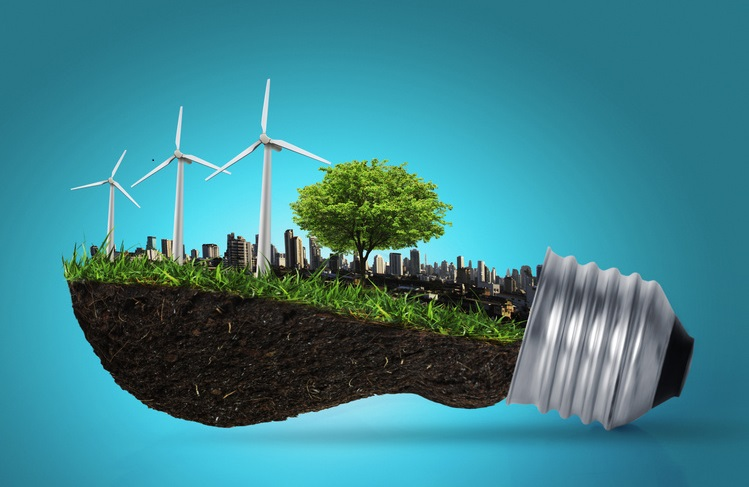

LA ENERGÍA Y EL MEDIO AMBIENTE
La energía constituye un insumo vital para el desarrollo sostenible de una
región. Sin embargo, su producción, transporte y consumo trae como consecuencia
impactos en el medio natural y social, cuyos efectos pueden ser de carácter
local o global.
La generación de energía a partir de fuentes convencionales tiene un enorme impacto
en el entorno, es por este motivo que las energías renovables se presentan como la alternativa
sostenible y ecológica para un mejor futuro del planeta.

VENTAJAS DE USAR ENERGÍAS ALTERNATIVAS
Son inagotables, proceden de recursos naturales,.
Potencian el auto consumo, pueden ser auto producidas por el propio consumidor final.
Evitan la dependencia exterior, impulsar la independencia energética de los territorios.
Pueden llegar a lugares aislados, están disponibles en toda la superficie terrestre.
Son respetuosas con el medio ambiente, no producen casi emisiones de co2 ni expulsan gases contaminantes.
DESVENTAJAS DE USAR ENERGÍAS ALTERNATIVAS
Se caracterizan por producir un impacto visual elevado..
No siempre se obtiene la misma energía con ellas.
Se requieren grandes extensiones de espacio para poder generar cantidades significativas de energía.